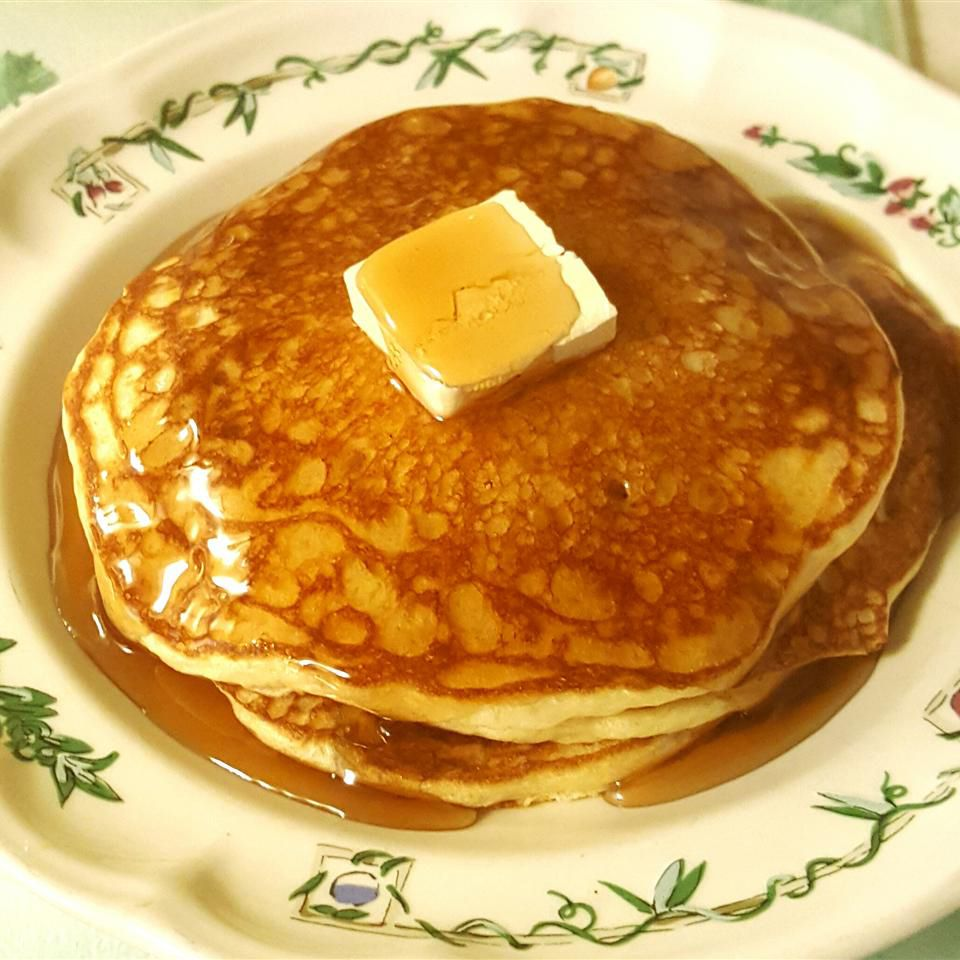

Buttermilk-Pancakes

These are flat cake made of thin batter and cooked (as on a griddle) on both sides.
Ingredients
- 1 cup flour
- 1 teaspoon salt
- 1 teaspoon baking soda
- 1 large egg
- 1 ⅛ cups buttermilk
- 2 tablespoons butter, melted
Steps
- Preheat and lightly grease a large skillet or electric griddle.
- Mix flour, salt, and baking soda together in a bowl. Add egg, buttermilk, and butter; stir together lightly, but keep it lumpy. The batter should look thick, spongy, and puffy.
- Drop 1/3 cup of the batter onto the cooking surface, spreading lightly with the bottom of the cup. Cook until lightly browned on each side, 1 to 2 minutes per side.